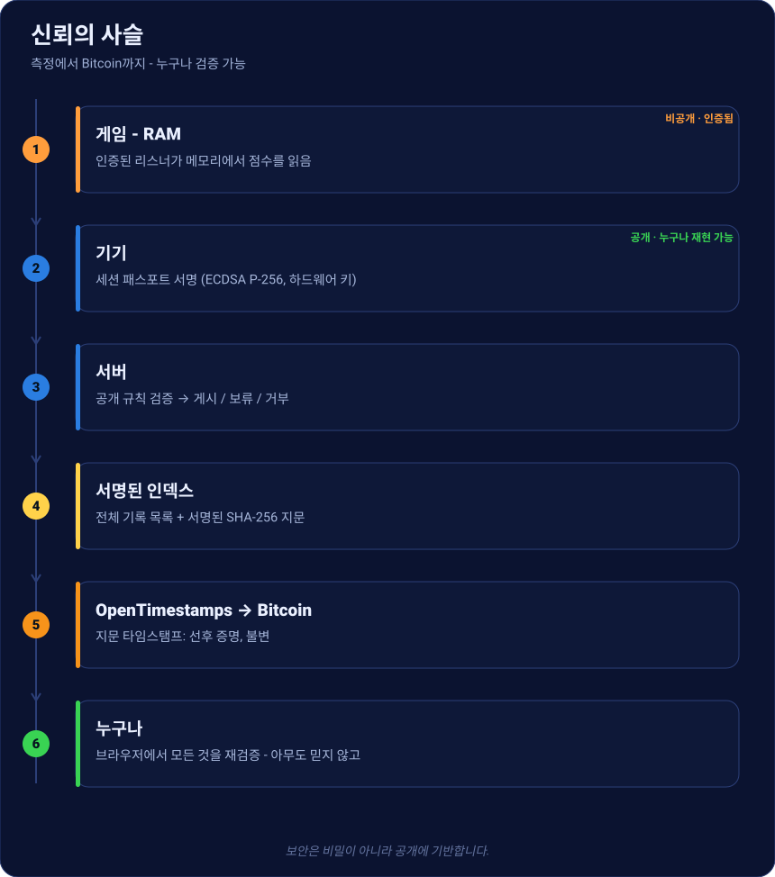

인증된 기록
누구도 조작할 수 없는 레트로 점수 공개 순위표 - 그리고 우리를 믿지 않고도 누구나 검증할 수 있습니다. 플레이부터 Bitcoin 상의 증명까지, 일어나는 모든 것입니다.
신뢰의 사슬 한눈에

각 단계는 공개·재현 가능하거나 인증·서명되어 있습니다. 보안은 비밀이 아니라 공개에만 기반합니다(케르크호프스 원리).
1 · 신고가 아니라 측정
점수는 게임이 보내지 않습니다. 인증 구성요소(리스너)가 에뮬레이터 메모리에서, 원천에서, 타임스탬프가 찍힌 체크포인트와 함께 직접 읽습니다. “신고” 점수는 시스템에 들어오지 않습니다.
2 · 기기에서 서명
기기는 세션 패스포트(점수, 코어/덤프/리스너 지문, 체크포인트, 티켓)를 만들고 비추출 하드웨어 키(ECDSA P-256)로 서명합니다. 이후 1바이트라도 바뀌면 서명 무효.
3 · 서버에서 검증
서버는 게임을 재실행하지 않습니다. 공개 규칙(오픈소스 CoreVerifier) - 기대 지문, 궤적 단조성, 게임 종료, 유효 티켓 - 을 적용하고 게시 / 보류(통계 이상, 즉시 거부는 없음) / 거부 판정을 내립니다. 사람 심판은 없습니다.
4 · 서명된 인덱스에 게시
게시된 점수는 서명된 인덱스를 이룹니다. 전체 목록 + 발행자가 서명한 SHA-256 지문. 이 인덱스가 순위를 재구성하며, 데이터베이스 손실을 무의미하게 만듭니다(재구성·미러 가능).

5 · Bitcoin에 봉인
인덱스 지문을 OpenTimestamps로 Bitcoin에 타임스탬프합니다. 확인되면 기록이 특정
블록 이전에 존재했음을 증명합니다 - 불변의 선후. 갓 봉인된 점수는 금색으로
표시되며, .ots 증명은 다운로드하여 표준 OpenTimestamps 클라이언트로 검증할 수 있습니다.
6 · 기록 증명서
각 점수에는 불변·공유 가능한 페이지가 있습니다. 점수, 덤프 지문(MD5 + SHA-256), 서명 ✓, 그리고 Bitcoin 봉인(블록). 순위는 없습니다 - 순위는 순위표에 있습니다.

7 · 우리를 믿지 않고 검증 가능
공개 검증기는 지문을 재계산하고 서명을 검증(Web Crypto)하며 봉인 상태를 읽습니다 - 당신의 브라우저에서. 아무것도 곧이곧대로 받아들이지 않습니다. 직접 호스팅할 수도 있습니다.

정직한 한계
오픈 프로토콜은 닫힌 리스너가 올바른 주소를 읽었다는 것을 수학적으로 증명하지 않습니다. 증명하는 것은 인증 빌드가 존재했고, 올바른 프로세스에 묶였으며, 수정되지 않았고, 공개 규칙이 적용되었다는 것입니다. 측정에 대한 신뢰는 인증·서명·버전 관리·감사된 리스너에서 옵니다 - 투명성, 인증 참조.